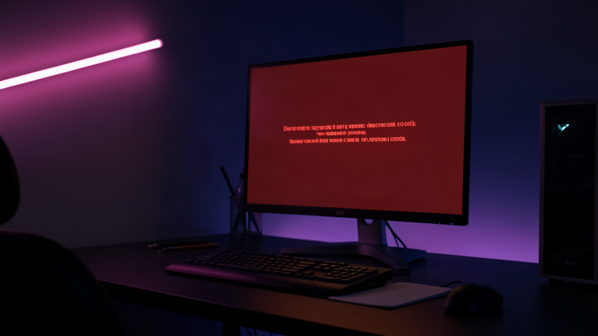
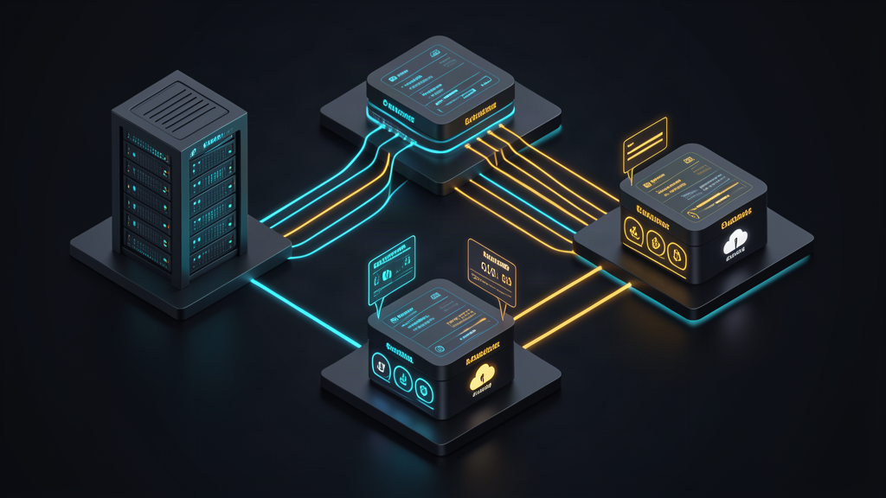
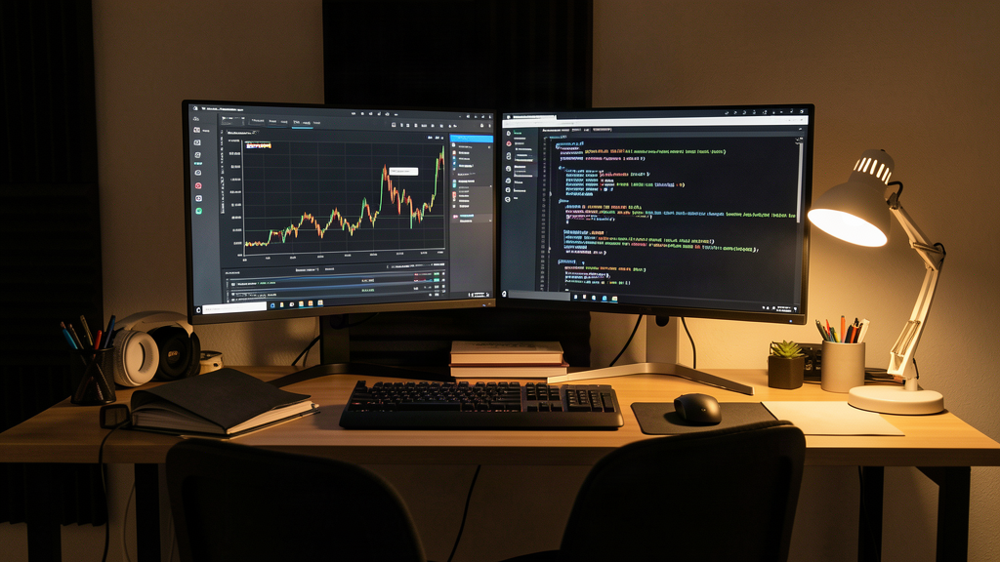

Строить продакшен вокруг личной веб-подписки за двадцать долларов — это попытка обмануть законы физики в IT. Пока самописный скрипт парсит куки и дергает браузерный чат, кажется, что найдена лазейка: зачем платить за токены в облаке, если есть условный безлимит?
Октябрьская волна банов веб-аккаунтов Anthropic наглядно показала цену этой иллюзии. В один день у десятков команд легли скрипты, а на экране повисла сухая плашка об отключении аккаунта. Самый полезный вопрос обычно задаёшь уже после блокировки: как защитить прод, когда привычный доступ сгорел без предупреждения?

Ловушка серой экономии: почему веб-сессии обречены
Начнём с основания: личные подписки Claude Pro созданы для живого диалога человека в браузере. Они не рассчитаны на то, чтобы в них стучались автоматические скрипты каждые тридцать секунд.
Когда разработчики заворачивают агентов в сессионные токены веб-интерфейса, они покупают себе гарантированную головную боль. Антифрод вендора фиксирует нетипичный трафик моментально: отсутствие пауз печати, одинаковые заголовки, подозрительные IP-адреса и круглосуточная активность запросов.
Смотрите, в чём разница: в веб-версии вы формально нарушаете правила сервиса и висите на волоске от блокировки без права апелляции. Любое обновление защиты роняет автоматизацию намертво. Экономия пары десятков долларов оборачивается часами простоя и сорванными задачами.
Куда уводить боевой трафик: надежные альтернативы
Главный поинт, который стоит понять: прод на веб-чатах не строят. Если нужна стабильность, личные веб-подписки необходимо выкинуть из боевых процессов. Единственный рабочий путь — переход на официальные облачные API с оплатой за фактически сожженные токены.
Для изоляции от блокировок рынок дает три проверенных шлюза:
- AWS Bedrock — корпоративная инфраструктура Amazon. Модели Claude развернуты внутри защищенного периметра облака, доступ идет через IAM-роли, а риск бана за частые вызовы равен нулю.
- Google Cloud Vertex AI — контур от Google с гарантированным SLA и прямой интеграцией с моделями Anthropic.
- OpenRouter — шлюз с мультипровайдерной маршрутизацией, позволяющий переключаться между поставщиками без изменения кода.
И, разумеется, остается прямая консоль Anthropic с коммерческим биллингом. В официальном API никто не блокирует за частые запросы: вы пополняете баланс и работаете строго в рамках выделенных квот.

Мой опыт: отказоустойчивый контур без единой точки отказа
В моем сетапе оркестратор Hermes и локальные агенты никогда не зависят от одной точки входа. Я усвоил, что завязывать продакшен на один прямой ключ — неоправданный риск.
Логика простая: на уровне конфигурации агентного контура настраивается каскадный фоллбек. Основной поток идет через прямое API с предоплаченными токенами. Если шлюз возвращает ошибку или упирается в лимиты скорости, запрос на лету подхватывает AWS Bedrock или OpenRouter.
Иногда самая дешёвая оптимизация — открыть документацию: облачные платформы изначально спроектированы под пакетную нагрузку и агентные вызовы. Вместо борьбы с капчами вы получаете чистый стриминг ответов без задержек. Да, за миллион токенов приходится платить деньги, но эта сумма в разы меньше стоимости простоя сервиса.

Мой вывод: гигиена продакшена
Я считаю, что прошедшая волна блокировок — отличная прививка для всей индустрии. Она отрезвляет и заставляет вспомнить основы системной инженерии.
Нельзя строить бизнес-логику на песке. Попытка сэкономить на токенах через костыли в браузере всегда заканчивается одинаково: красным баннером в интерфейсе и паникой в логах. Настоящая надежность начинается там, где инфраструктура становится скучной, прозрачной и детерминированной.
Выкиньте веб-сессии из бэкенда, настройте прямой биллинг за токены и забудьте о страхе внезапного бана.
А как устроена ваша инфраструктура: перевели боевых агентов на облачные API или до сих пор рискуете веб-аккаунтами? Напишите в комментариях, как вы защищаете свои процессы от вендорских блокировок.